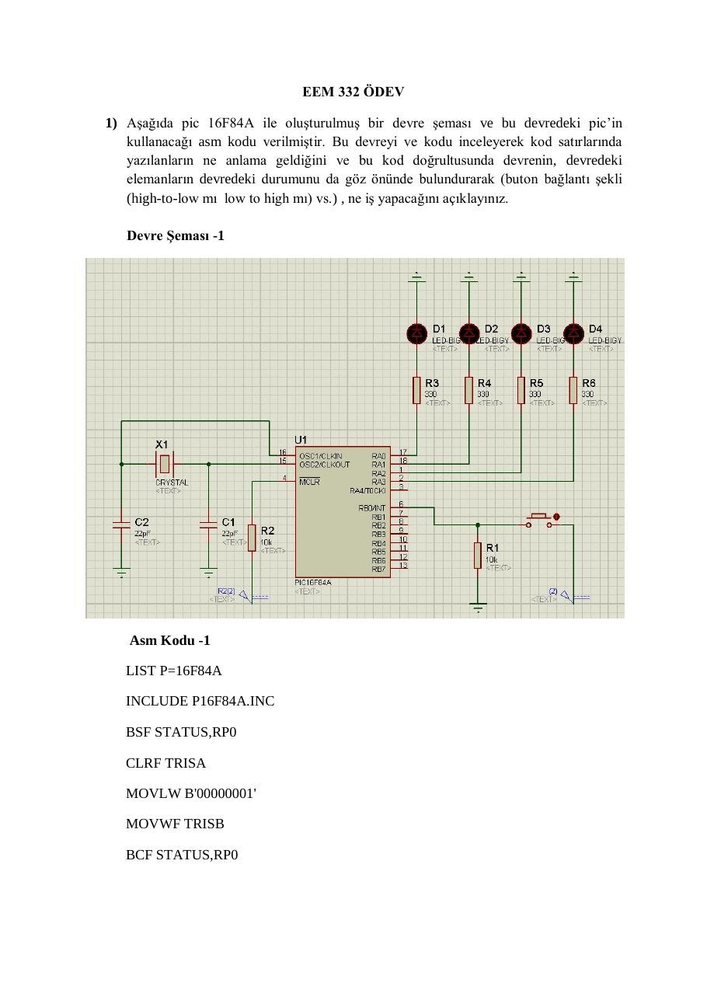
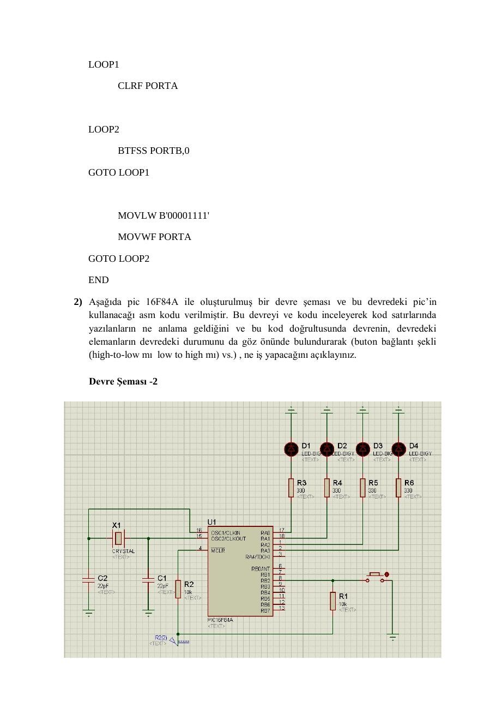
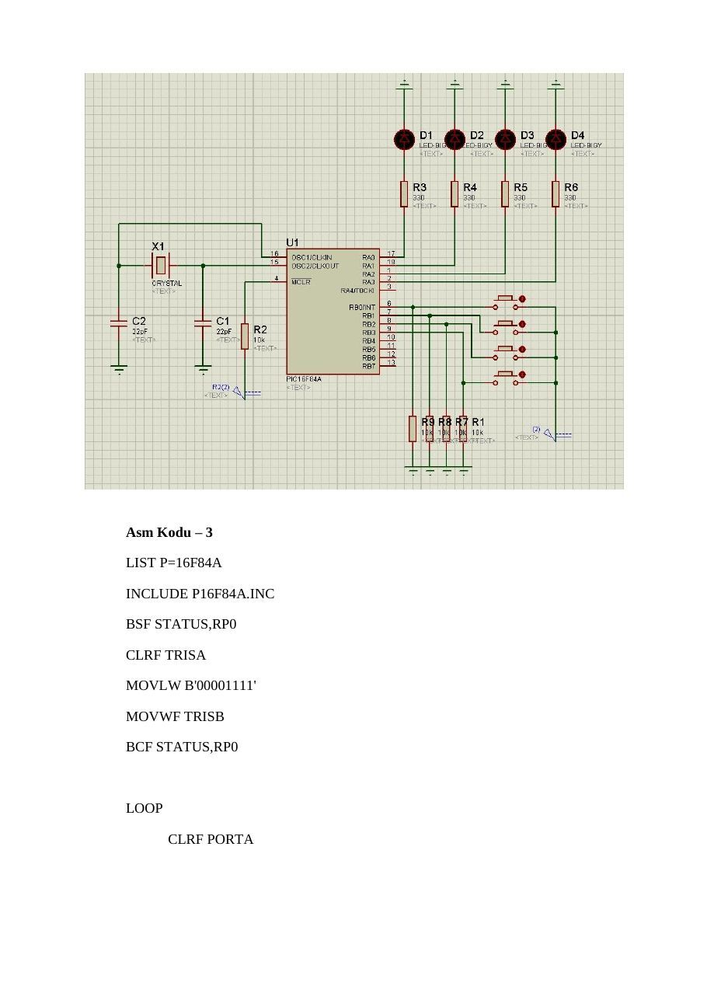

· EEM332
EEM332 Microprocessors: PIC16F84A Assignment: Button and LED Control
EEM332 – Mikroişlemciler · 01.05.2013 · 18.10.2026
This post brings together the relevant notes and applications from the Başkent University EEM332 Microprocessors course archive (2013–2015). 2013 PIC assignment: TRIS direction setting, BTFSC/BTFSS and LED outputs depending on button state. Works prepared by a friend and course documents have been included together; student names, numbers and group information have been removed. PDF archive copies of the documents and, where available, source code are available for download as a ZIP at the end of the post.
EEM332_odev
EEM 332 ASSIGNMENT
1) A circuit schematic built with a PIC16F84A and the asm code that the PIC in this circuit will use are given below. Examine the circuit and the code, and explain what the code lines mean and what the circuit will do in line with this code, taking into account the state of the circuit elements (how the button is connected (high-to-low or low-to-high), etc.).
Circuit Schematic -1
Asm Code -1
LIST P=16F84AINCLUDE P16F84A.INCBSF STATUS,RP0CLRF TRISAMOVLW B'00000001'MOVWF TRISBBCF STATUS,RP0LOOP1CLRF PORTALOOP2BTFSS PORTB,0GOTO LOOP1MOVLW B'00001111'MOVWF PORTAGOTO LOOP2END2) A circuit schematic built with a PIC16F84A and the asm code that the PIC in this circuit will use are given below. Examine the circuit and the code, and explain what the code lines mean and what the circuit will do in line with this code, taking into account the state of the circuit elements (how the button is connected (high-to-low or low-to-high), etc.).
Circuit Schematic -2
Asm Code – 2
LIST P=16F84AINCLUDE P16F84A.INCBSF STATUS,RP0CLRF TRISAMOVLW B'00000100'MOVWF TRISBBCF STATUS,RP0LOOP1MOVLW B'00000101'MOVWF PORTALOOP2BTFSC PORTB,2GOTO LOOP1MOVLW B'00001010'MOVWF PORTAGOTO LOOP2END3) A circuit schematic built with a PIC16F84A and the asm code that the PIC in this circuit will use are given below. Examine the circuit and the code, and explain what the code lines mean and what the circuit will do in line with this code, taking into account the state of the circuit elements (how the button is connected (high-to-low or low-to-high), etc.).
Circuit Schematic – 3 ↓ (on the next page) ↓
Asm Code – 3
LIST P=16F84AINCLUDE P16F84A.INCBSF STATUS,RP0CLRF TRISAMOVLW B'00001111'MOVWF TRISBBCF STATUS,RP0LOOPCLRF PORTATEST1
BTFSC PORTB,0GOTO LOOP1TEST2
BTFSC PORTB,1GOTO LOOP2TEST3
BTFSC PORTB,2GOTO LOOP3TEST4
BTFSC PORTB,3GOTO LOOP4GOTO LOOPLOOP1MOVLW B'00000001'MOVWF PORTAGOTO TEST1LOOP2MOVLW B'00000010'MOVWF PORTAGOTO TEST2LOOP3MOVLW B'00000100'MOVWF PORTAGOTO TEST3LOOP4MOVLW B'00001000'MOVWF PORTAGOTO TEST4END


EEM332_odev_aciklama
EXPLANATION REGARDING THE EEM332 COURSE ASSIGNMENT
The EEM332 course assignments have been uploaded to the relevant link. Those whose student number ends in
0, 1, 2 or 3 are responsible for assignment 1, those ending in 4, 5 or 6 for assignment 2, and those ending in 7, 8 or 9 for assignment 3.
The schematic and source code given in the relevant assignment will be used to briefly explain what is being implemented. The work will be done individually. Assignments that are identical (for both those who provide the work and those who receive it) will be graded 0. Assignments will be submitted as printouts during class on Wednesday, 8 May 2013.
ödevlab
When the program starts, with the button connected to the second bit of portB (RB2) "high" (not pressed);
- The LEDs on bit zero of portA (RA0 – lamp D1) and bit two of portA (RA2 – lamp D3) were lit.
When the program starts, with the button connected to the second bit of portB (RB2) "low" (pressed);
- The LEDs on bit one of portA (RA1 – lamp D2) and bit three of portA (RA3 – lamp D4) were lit.
The purpose of the program is to light the odd-numbered LEDs (D1–D3) when the button is high, and the even-numbered LEDs (D2–D4) when the button is low.
When HIGH;
When LOW;
ODEV
LIST P=16F84A
INCLUDE "P16F84A.INC"
ORG 0X00 ;Starts the program at '0x00'.
BSF STATUS,RP0 ;Set bit 5 of STATUS to 1 to switch to BANK1, where TRISA and TRISB are located.
CLRF TRISA ;Made all bits of TRISA outputs.
MOVLW B'00000100' ;Loaded a value into the Working Register.
MOVWF TRISB ;Using the value in the Working R., made bit 2 of TRISB (RB2) an input.
BCF STATUS,RP0 ;Clear bit 5 of STATUS to 0 to switch to BANK0.
LOOP1 ;The LOOP1 loop runs when the button is not pressed (high).
MOVLW B'00000101' ;Loaded the value B'00000101'(H'05') into the Working R.
MOVWF PORTA ;Moved the value in the Working R. to PORTA. Set bits RA0 and RA2 to 1 and the lamps lit.
LOOP2 ;The LOOP2 loop runs when the button is pressed (low).
BTFSC PORTB,2 ;Checks bit 2 of the value at the PORTB address. If it is zero (low), it skips the instruction that follows. Otherwise (high), it continues with the GOTO LOOP1 instruction.
GOTO LOOP1 ;Goes to the LOOP1 loop.
MOVLW B'00001010' ;Loaded the value B'00001010'(H'10') into the Working R.
MOVWF PORTA ;Moved the value in the Working R. to PORTA. Set bits RA1 and RA3 to 1 and the lamps lit.
GOTO LOOP2 ;Continues from the LOOP2 loop, continuing by checking the button on bit 2 of PORTB (RB2).
END ;Termination instruction.ÖDEV
LIST P=16F84A
INCLUDE "P16F84A.INC"
ORG 0X00
BSF STATUS,RP0
CLRF TRISA
MOVLW B'00000100'
MOVWF TRISB
BCF STATUS,RP0
LOOP1
MOVLW B'00000101'
MOVWF PORTA
LOOP2
BTFSC PORTB,2
GOTO LOOP1
MOVLW B'00001010'
MOVWF PORTA
GOTO LOOP2
END1
LIST p=16F84A
INCLUDE "P16F84A.INC"
__CONFIG _CP_OFF & _WDT_OFF & _PWRTE_ON & _XT_OSC
j EQU 0x0c
k EQU 0x0d
ORG 0x00
BSF STATUS,5
MOVLW 0x00
MOVWF TRISB
BCF STATUS,5
LEDonoff:
movlw b'00000001'
movwf PORTB
call delay
movlw b'00000000'
movwf PORTB
call delay
goto LEDonoff
delay:
movlw d'200'
movwf j
jloop:
movwf k
kloop:
decfsz k,f
goto kloop
decfsz j,f
goto jloop
return
End